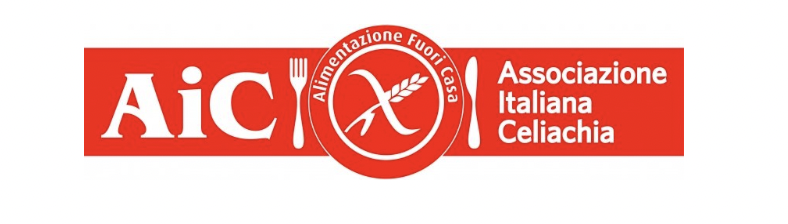
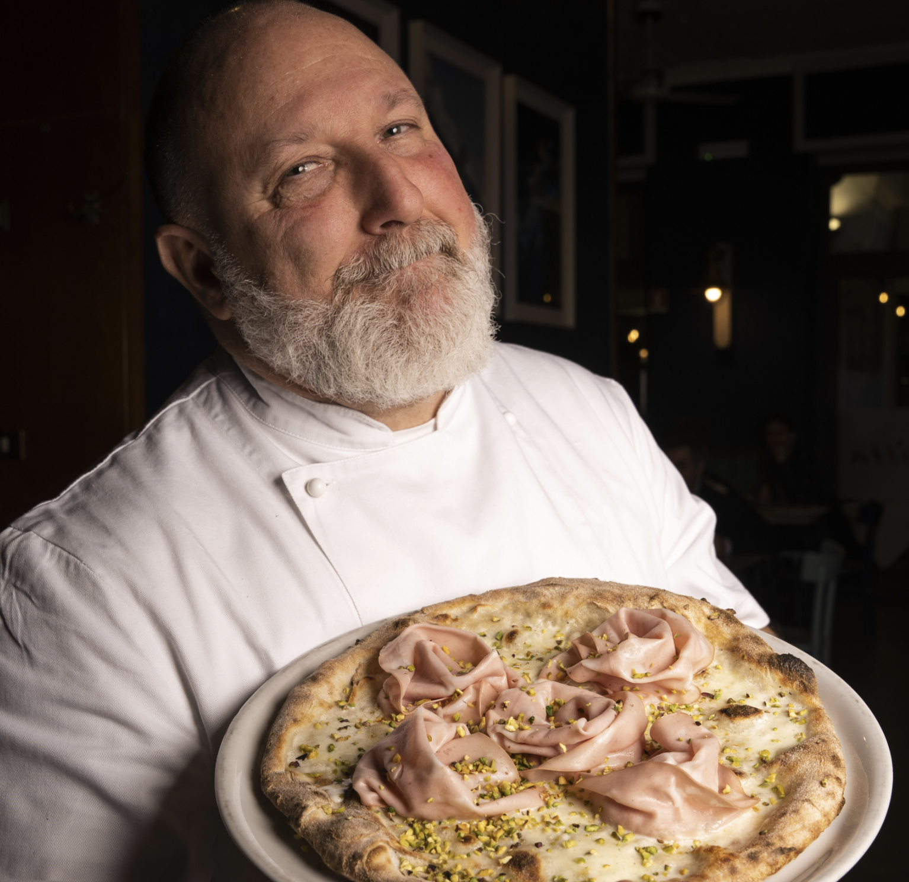

Il Ristorante Pizzeria La Bitta è fiero di garantire a tutti i clienti, anche quelli con determinate intolleranze alimentari come la celiachia, la possibilità di poter godersi una pizza o un piatto di cucina con gli amici.
Le pizze con farine senza glutine sono adeguatamente cotte nel forno apposito, regolarmente certificato. Gran parte del nostro menù è disponibile anche in versione gluten free, così da offrire un'esperienza completa e senza rinunce.
Per gli intolleranti al lattosio abbiamo inoltre la possibilità di preparare pizze usando come ingrediente il formaggio vegano, Violife, un sostituto vegetale del formaggio, perfetto anche per chi segue un'alimentazione vegana. Offriamo inoltre diverse soluzioni dedicate sia a chi è intollerante al lattosio sia a chi segue una dieta vegana.


La preparazione avviene in una postazione dedicata e la cottura in un forno separato, per garantire massima sicurezza ed evitare ogni contaminazione, senza rinunciare al gusto.
Compila il form e verrai reindirizzato su WhatsApp con il messaggio già pronto da inviare.